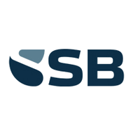
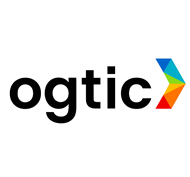

Centro de Confianza, Seguridad y Privacidad
Dónde viven tus datos,
quién puede tocarlos
y qué queda escrito.
Clèrigo custodia el registro de riesgos, los hallazgos de auditoría y los datos personales que trata tu organización. Esta página dice, sin adornos, cómo se protegen y qué se puede comprobar. Lo que todavía no está terminado también aparece aquí.
Compromisos de cumplimiento
Lo que ya está auditado y lo que firmamos contigo antes de empezar.
Clèrigo tiene un informe SOC 2 Tipo II de un auditor independiente. Cubre de enero a diciembre de 2025 y comprueba que los controles de acceso, cifrado, monitorización y respuesta a incidentes funcionaron durante todo ese periodo. Se entrega bajo acuerdo de confidencialidad.
Con las organizaciones de salud, Clèrigo firma un Acuerdo de Asociado Comercial (BAA) antes de empezar. Formaliza las obligaciones de HIPAA que se comparten. Las salvaguardas técnicas —cifrado, control de acceso y rastro de auditoría— son las que se describen en esta misma página.
Para clientes del Espacio Económico Europeo, Clèrigo actúa como encargado del tratamiento conforme al artículo 28 del RGPD y ofrece un contrato de encargo (DPA). Tu organización sigue siendo la responsable. La plataforma se aloja en Microsoft Azure, región East US, y trae el expediente de derechos del titular con su plazo legal.
Lo que guarda Clèrigo se almacena en Microsoft Azure con cifrado AES-256 en reposo y viaja cifrado con TLS. Las credenciales de las integraciones llevan además su propio cifrado AES-256-GCM, con una llave distinta para cada organización.
Atestaciones y certificaciones
Una atestación la firma un tercero después de mirar. Una certificación la emite un organismo acreditado. No son lo mismo y aquí se dicen por separado.
SOC 2 Tipo II
El Tipo II no fotografía un día: cubre un periodo y comprueba que los controles funcionaron durante todo ese tiempo. El alcance incluye la plataforma y la organización que la opera.
- Auditor
- Ortvent Inc
- Periodo
- Enero – diciembre 2025
- Entrega
- Bajo acuerdo de confidencialidad
ISO 27001
La certificación está en curso. Hasta que un organismo acreditado la emita, Clèrigo no está certificado en ISO 27001 y esta página no va a decir lo contrario. Los controles del Anexo A ya están implantados y son los que audita el informe SOC 2 de arriba.
- Estado
- Implantación completada, certificación en curso
- Alcance
- Plataforma y operación
Dónde corre la plataforma
Infraestructura gestionada, con el perímetro delante de la aplicación y no sólo del sitio web.
Región East US. La infraestructura de Azure mantiene sus propias certificaciones, independientes de las de Clèrigo.
Delante del sitio público y delante de la aplicación. La protección cubre donde están los datos, no sólo el folleto.
Las copias no se pueden alterar ni borrar dentro de su periodo de retención. Es la defensa que sigue en pie cuando un atacante ya está dentro.
La aplicación corre con un usuario sin privilegios y expone una comprobación de salud que consulta la base de datos, no sólo si el proceso vive.
Integraciones
Clèrigo está en desarrollo activo. Estas son las herramientas con las que se conecta, y en qué punto está cada conexión.
Privacidad por defecto
Lo que no depende de ningún ajuste: viene así de fábrica.
Nunca vendemos tus datos
Tus riesgos, evaluaciones y documentos no se venden ni se ceden a anunciantes ni a terceros.
Tus datos no entrenan modelos de IA
Las funciones de IA usan proveedores cuyos contratos excluyen entrenar con lo que se les envía. Clèrigo no entrena modelos propios con datos de clientes.
Aislamiento por organización
La base de datos separa a cada organización. Aunque el código fallara al filtrar, no saldrían datos de otra.
Un rastro que no se borra
Cada acción queda en una cadena de huellas SHA-256. La aplicación puede leer y añadir apuntes, nunca cambiarlos ni borrarlos.
Cifrado y control de acceso
Permisos por rol para que cada persona vea sólo lo suyo, segundo factor y credenciales cifradas.
Tus datos, borrados al irte
Si tu organización deja la plataforma, sus datos se borran de raíz, con motivo escrito y constancia previa en la bitácora.
Lo que hace el producto
No son intenciones: es lo que está escrito en el código y se comprueba en cada cambio con la batería de pruebas. Cada punto de aquí sale de una verificación sobre el repositorio.
Aislamiento entre organizaciones
- El aislamiento lo aplica la base de datos, no sólo el código: cada tabla protegida compara la organización de la fila con la de la sesión.
- Falla cerrada. Si el código se olvida de filtrar, no salen datos de nadie: sin organización fijada la comparación no casa con ninguna fila.
- La política se fuerza también sobre el dueño de la tabla, así que ni el propietario del esquema se la salta.
- 136 tablas con política de aislamiento en el motor. Las que quedan fuera están enumeradas una a una con su motivo escrito.
- La aplicación se conecta con un usuario que no es administrador y no puede saltarse las políticas.
Cifrado
- El baúl de credenciales cifra con AES-256-GCM, cifrado autenticado: además de ocultar, detecta manipulación.
- Cifrado en sobre: una llave nueva y de un solo uso por secreto, cerrada a su vez con la llave del despliegue.
- De la llave maestra se deriva una distinta por ámbito con HKDF-SHA256. Un secreto de una organización no se abre desde otra.
- Si falta la llave maestra, el baúl se niega a guardar: no escribe en claro como respaldo.
- Las contraseñas no se guardan: se guarda un resumen bcrypt de coste 12.
- Los secretos de las integraciones se cifran campo a campo antes de tocar la base.
Identidad y acceso
- Segundo factor con aplicación de autenticación, estándar RFC 6238. Sirve cualquier autenticador.
- Un código no se puede usar dos veces: se guarda el paso de tiempo aceptado y el siguiente intento se rechaza.
- La carrera entre dos peticiones con el mismo código la cierra la base de datos, no la aplicación.
- Llaves de acceso (passkeys) con la clave privada cifrada y atada a la persona.
- Diez códigos de recuperación, cada uno de un solo uso; generar nuevos anula los anteriores.
- Bloqueo progresivo de cuenta, freno contra el rociado de contraseñas y límite de peticiones por minuto y origen.
Rastro de auditoría
- Cada apunte se encadena con el anterior mediante una huella SHA-256: alterar uno rompe la cadena de todos los que vienen detrás.
- Al comprobar la cadena se vuelve a calcular la huella desde las columnas guardadas, no se comparan huellas entre sí.
- La aplicación no puede modificar ni borrar apuntes: sus roles de base sólo pueden leer y añadir.
- En el código no existe ninguna llamada que los modifique, borre o pode por antigüedad.
- Quitar un apunte de en medio o cambiar su contenido queda señalado, con el apunte concreto donde se rompe.
- La consola de plataforma lleva su propia bitácora, fuera de la organización, para que el apunte sobreviva a la baja de esa organización.
Red y navegador
- Cinco cabeceras de seguridad en todas las respuestas: HSTS, X-Frame-Options, X-Content-Type-Options, Referrer-Policy y Permissions-Policy.
- Política de contenido (CSP) generada de nuevo en cada petición, con un número de un solo uso para los scripts.
- La dirección de quien llama se lee de forma que no se puede falsificar: se cuenta desde el final de la cabecera y el número de intermediarios se declara.
- Limitador de peticiones sobre las puertas públicas: acceso, recuperación de contraseña y alta de organización.
Operaciones sobre tus datos
- Una operación de mantenimiento sobre una organización exige segundo factor, permiso comprobado contra la base y un motivo escrito. En ese orden.
- Nadie puede concederse a sí mismo el permiso de operar la plataforma: hace falta que otra persona lo conceda.
- Queda un apunte antes de la operación y otro después, con quién, cuándo y por qué.
- El código del segundo factor no viaja nunca por la línea de órdenes: se pide por consola para que no quede en el historial.
Datos personales
Clèrigo trata datos personales por cuenta de tu organización, que sigue siendo la responsable. El producto trae las herramientas para cumplir, y son las mismas que usa Clèrigo puertas adentro.
Derechos del titular
- Acceso, rectificación, supresión, portabilidad, oposición y limitación, cada uno con su expediente.
- El plazo se cuenta contra la fecha cada vez que se mira, no contra un número guardado el día del alta: una solicitud pasada de plazo se ve pasada de plazo.
Brechas
- Al registrar una brecha, la plataforma calcula la fecha límite de las 72 horas desde la hora de detección declarada.
- El expediente guarda qué pasó, a quién afectó y qué se hizo.
Marco normativo
- Catálogo de 77 controles de privacidad de cuatro marcos: ISO 27701, RGPD, Ley 172-13 y NIST Privacy Framework.
- La Ley 172-13 dominicana y el RGPD están dentro del catálogo, artículo a artículo y explicados en lenguaje llano.
Marcos que cubre la plataforma
Esto es lo que Clèrigo te ayuda a gestionar. No son certificaciones de Clèrigo: las nuestras están arriba, con su nombre y su estado.
Reguladores
Quién supervisa y ante quién hay que responder.Cibernética y de la Información
Cibernética Mercado de Valores

Supervisa la Superintendencia de Bancos
Prevención de lavado de activos
Protección de datos personales
Sector cooperativo

Dicta las normas NORTIC
Marcos regulatorios
Lo que obliga la ley, país por país.República Dominicana
República Dominicana
República Dominicana
República Dominicana
tecnológicos · OGTIC 2025
Estándares y marcos de referencia
A lo que una organización se certifica o que adopta como buena práctica.Subencargados
Quién más toca la infraestructura donde viven tus datos. Cualquier alta o cambio se avisa por adelantado.
| Proveedor | Para qué | Dónde |
|---|---|---|
| Microsoft Azure | Alojamiento de la plataforma, base de datos y copias de seguridad | East US |
| Cloudflare | Cortafuegos de aplicación (WAF) y entrega del sitio y de la plataforma | Red global |
| OpenAI | Modelos de IA de las funciones de análisis, sin entrenamiento con tus datos | EE. UU. |
| Anthropic | Modelos de IA de las funciones de análisis, sin entrenamiento con tus datos | EE. UU. |
| Google (Gemini) | Modelos de IA de las funciones de análisis, sin entrenamiento con tus datos | EE. UU. |
| xAI (Grok) | Modelos de IA de las funciones de análisis, sin entrenamiento con tus datos | EE. UU. |
| Sentry | Registro de errores de la aplicación, sin datos personales (desde el próximo despliegue) | EE. UU. |
¿Necesitas el informe para tu comité?
El informe SOC 2 Tipo II se entrega bajo acuerdo de confidencialidad. Si tu equipo de seguridad tiene un cuestionario propio, lo respondemos con la misma letra que ves aquí.
Esta página se revisa cuando cambia algo que aquí se afirma. Si encuentras un fallo de seguridad, escribe a security@clerigo.io y te contestamos antes de contárselo a nadie más.